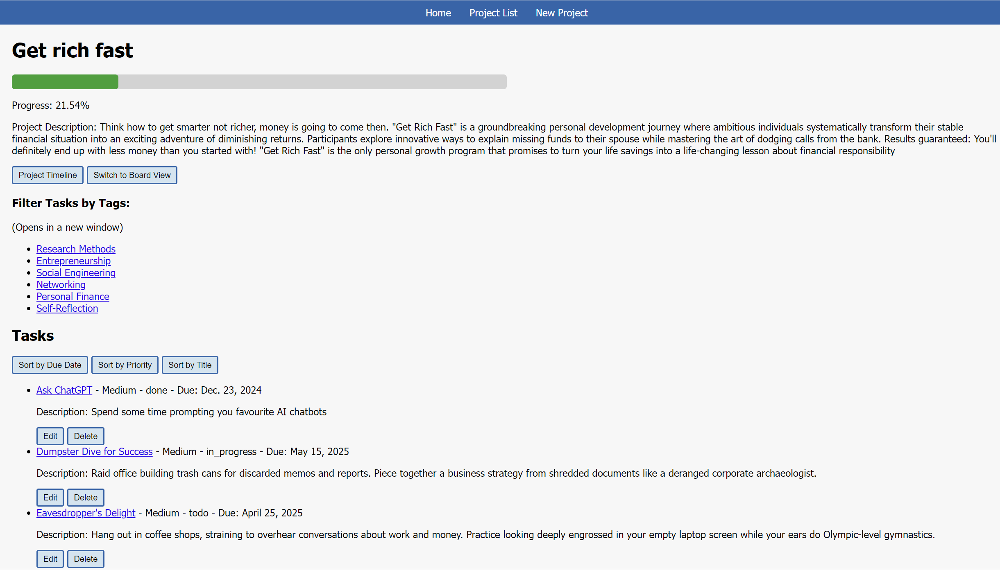
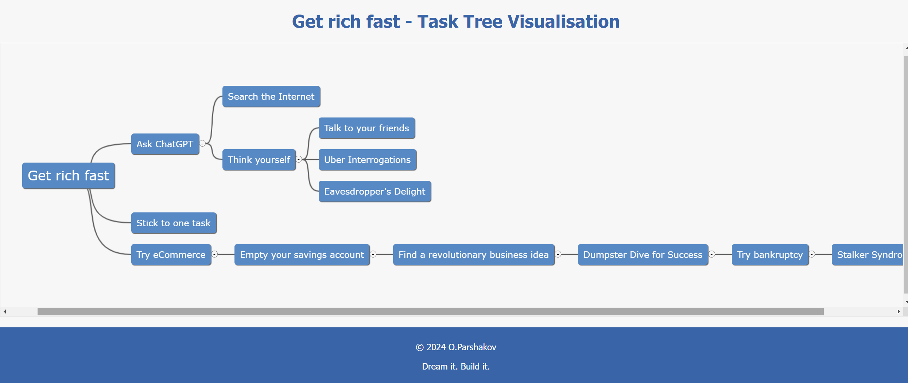
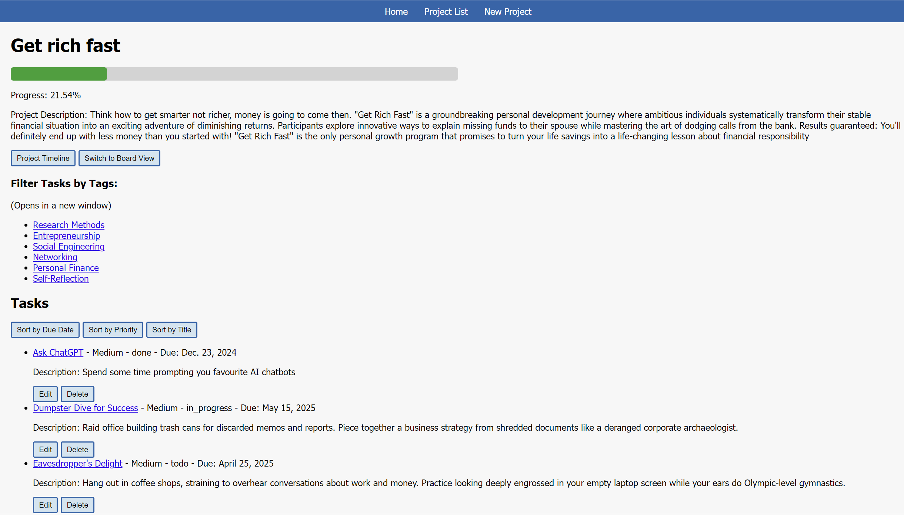
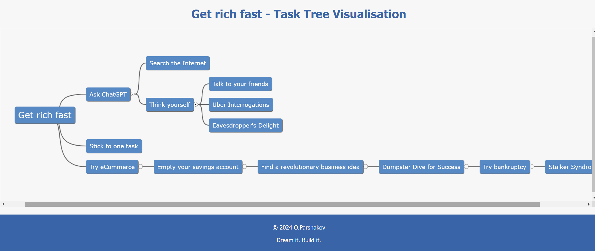
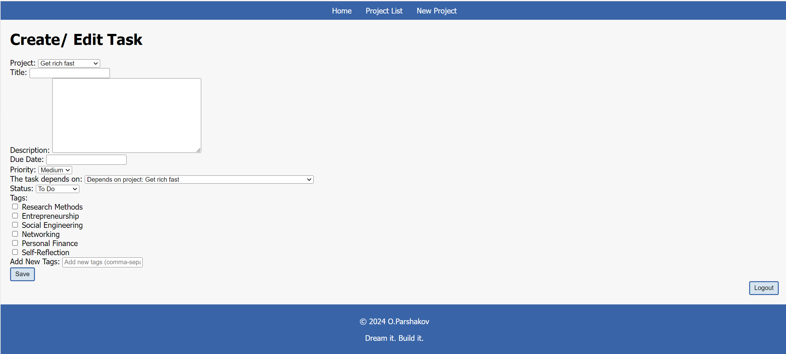
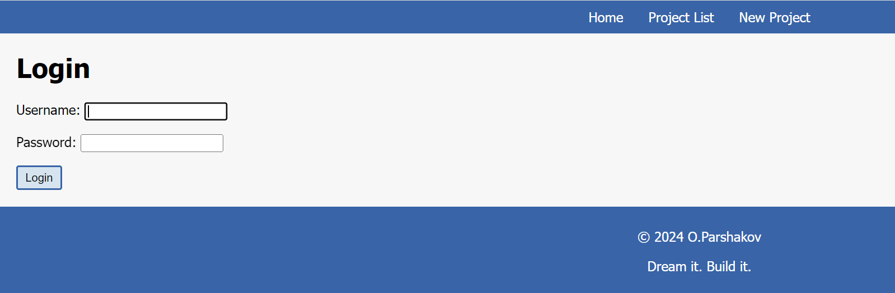
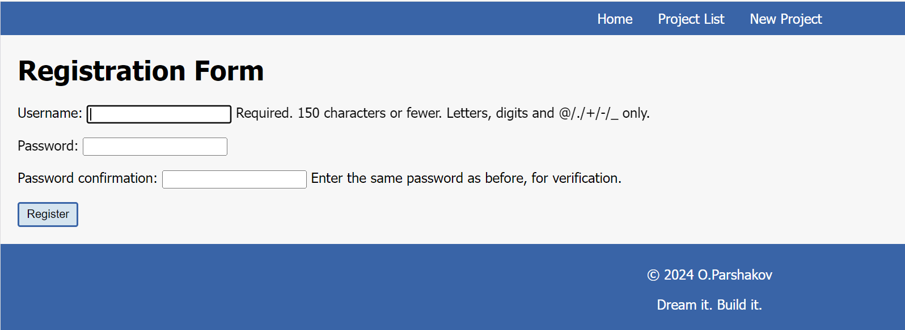
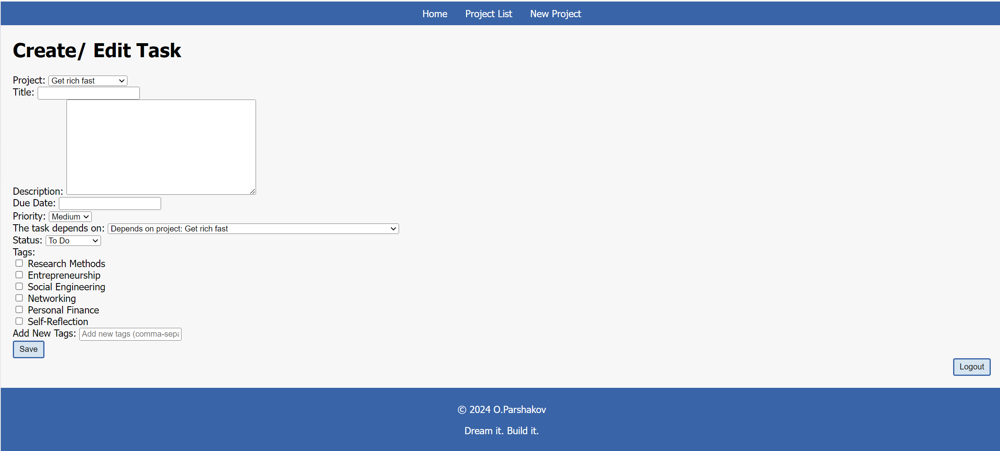
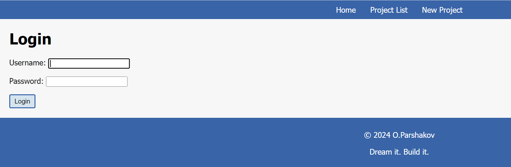
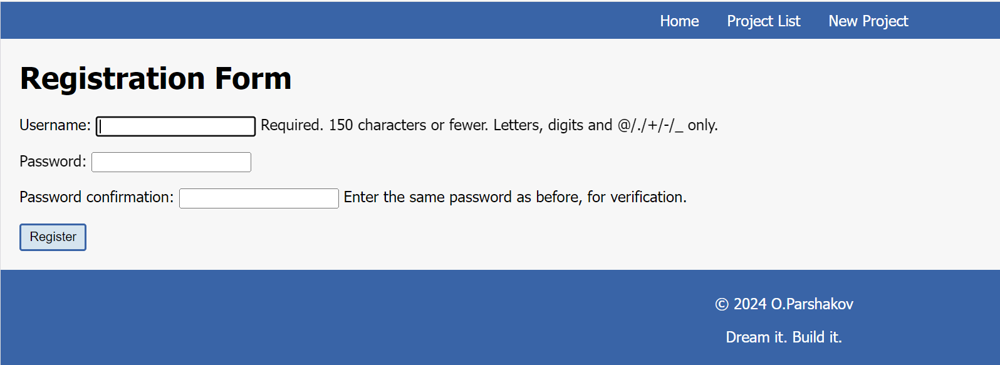

Project Management System
Tip: Wait 2s & Reload if you see a confusing message like "Something went wrong while trying to load this site".(Actually, nothing went wrong. The hosting provider is free so they hybernate the website if unused.)
Overview/Goals: The PMS app offers a user-friendly, versatile project management solution, enabling users to efficiently create, view, edit, and delete tasks and projects (CRUD operations). It provides dual views (list and board) for enhanced project visualisation, streamlining workflows while prioritising simplicity and usability. Designed for small businesses and freelancers, the app avoids feature overload often found in complex tools. Recently I applied the replatforming strategy (also known as "lift, tinker, and shift") to migrate it to to AWS
GitHub repo: github.com/lzrdGreen/pms
Technical Details:
Programming languages and frameworks: Python, Django
Database technology: The project primarily uses SQLite, a lightweight database suitable for its current deployment. In the context of its ongoing cloud migration to AWS, SQLite is also currently utilised within the main application's Docker container, mirroring the local development setup. There's a future plan to transition to MySQL for enhanced scalability and robust cloud deployment, managing this within separate containers in AWS ECS.
Deployment details: The stable version of the application is currently live on PythonAnywhere. Simultaneously, an experimental version is containerised with Docker and running on an AWS EC2 instance as part of the ongoing "lift, tinker, and shift" cloud migration effort.
Key Features:
Dual view options: List and board views for flexible project visualisation.
Intuitive user interface for easy navigation and task management.
Streamlined project management workflows to enhance productivity. Visual progress indicators for project completion status.
Comprehensive task and project CRUD operations.
Task prioritisation and categorisation.
Keyword search and task filtering by tags for efficient information retrieval.


 



 





Click on an image to enlarge it.
Challenges:
Balancing user-friendliness with the need for powerful features: The PMS app strives to be easy to use while offering the features users need to manage projects effectively.
Developing robust functionality within the constraints of a solo project.
A new project management tool needs to be easy to learn and use to encourage adoption by users who may be accustomed to other tools.
Solutions Implemented:
The PMS app's intuitive user interface and focus on CRUD operations (Create, Read, Update, Delete) address the challenge of balancing user-friendliness with powerful features.
This personal project features streamlined workflows for creating, managing, and tracking tasks, with visual progress bars indicating the completion status of each project.
The application features streamlined workflows for creating, managing, and tracking tasks, with visual progress bars indicating the completion status of each project.
Task prioritization and categorization are supported through the use of tags, and tasks can be filtered by tags for efficient information retrieval.
The application provides both list and board views, offering flexible project visualization tailored to different user preferences.
Comprehensive CRUD (Create, Read, Update, Delete) operations are implemented for both tasks and projects.
Lessons Learned:
Developing a full-stack application solo requires careful planning and time management.
Prioritising core functionality over extensive features is crucial for solo projects with limited resources.
User experience (UX) design is critical for project management tools. A well-designed UX can make even complex features easy to use.
It is important to strike a balance between features and usability. Too many features can overwhelm users, while too few features may not meet their needs.